Bootstrap 3
- Bootstrap Grid
- Bootstrap Container
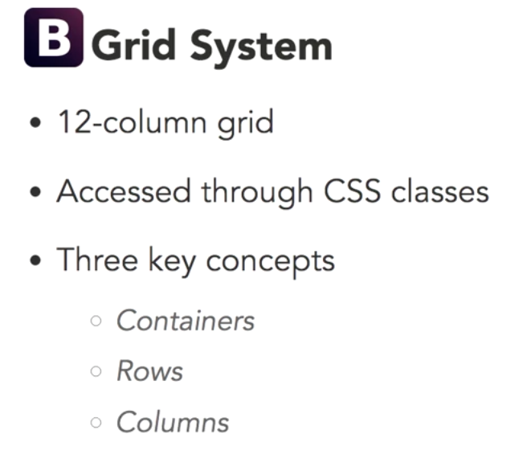
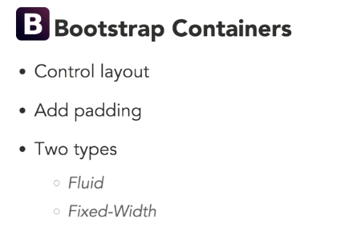
For FLUID: 15 px margin
For FIX WIDTH CONTAINER:
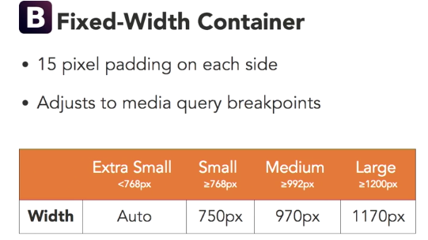
Container Demo - Row
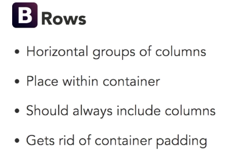 - Columns
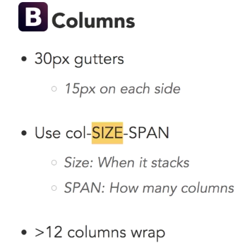
Column Metrics
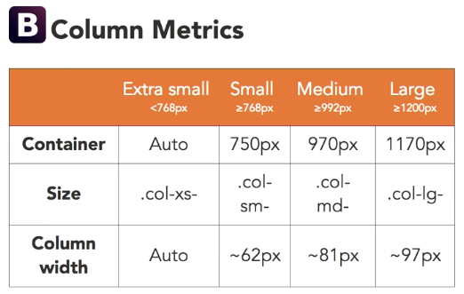
NOTE: class=
1-"column-md-6" number 6 means the width of each section taking up 6 columns of total 12
2- For xs, there is no break point to stack
Demo of Column Metrics - Using multiple column classes
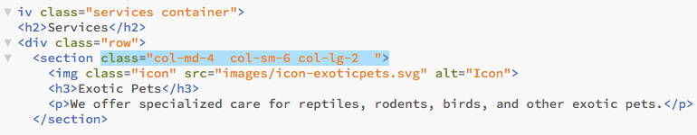
Demo of Multiple Column Classes - Resetting Columns:
- This happens when getting in the certain breakpoint, one content is bigger or smaller than other which could cause the layout look funny
- When it gets to "col-sm-6" breakpoint, the layout starts looking funny
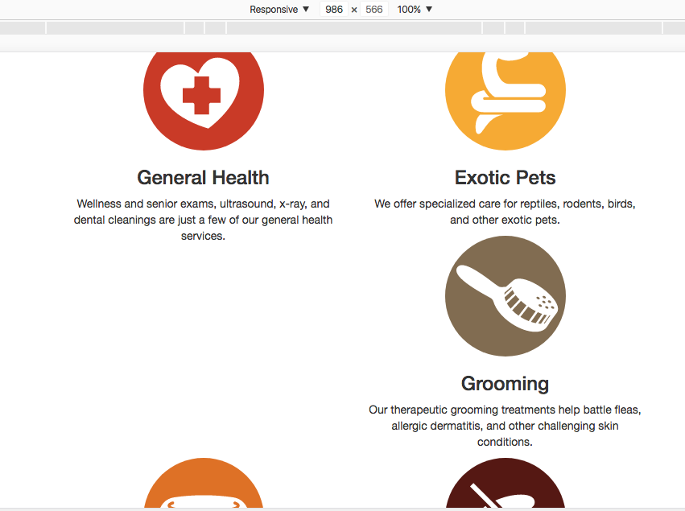
- To fix this we can create the div section with class clearfix at right after the session is affected:
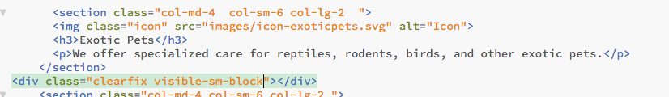
Demo of resetting column with clearfix class - Offsetting Columns
- It is a way to ask certain columns to move over by a certain number of column widths. For example:
-Before offsetting
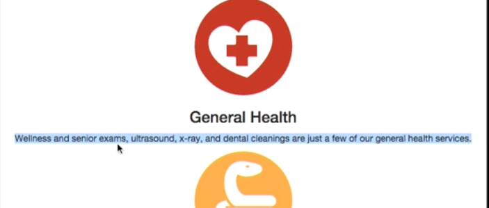
-After offsetting
-Offset Code:
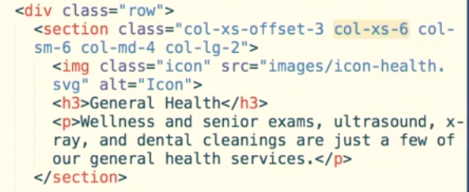
-NOTE: it could cause a problem on the next breakpoint we should use offset-0 to set back to o from the next breakpoint
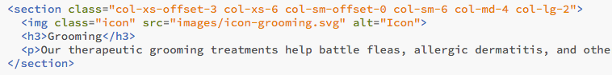
Demo of offset column with offset class - Nesting Columns:
-Whenever you want to make really complicated layouts you can actually put rows inside other rows. And when you do that you essentiall get another twelfth column grid inside your existing section.
-For example:
Before nesting
After nesting
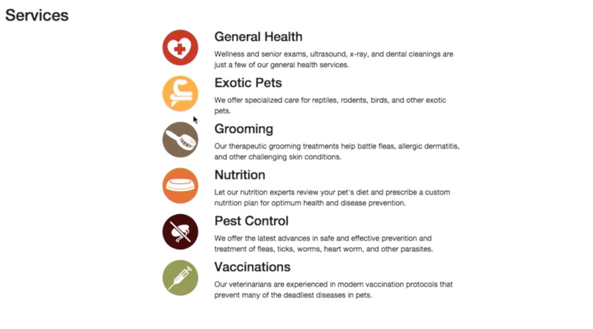
Demo of nesting column
- Bootstrap Container